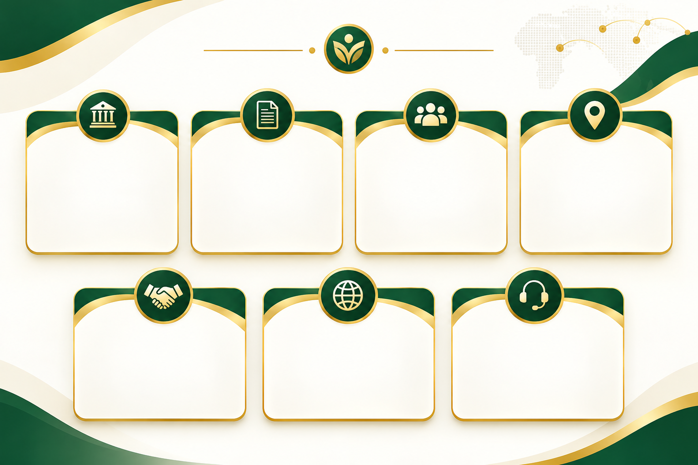
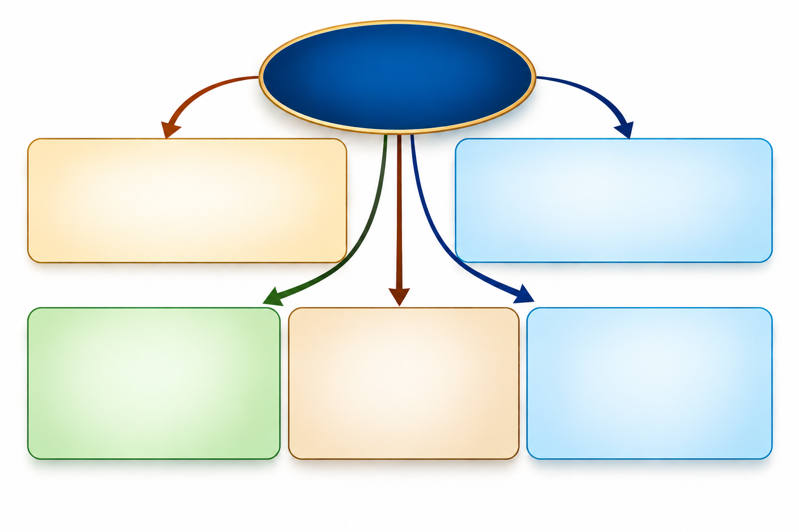

Institutional Representation
We represent clients in authorized matters and facilitate professional communication with relevant institutions in Ethiopia.

Your Professional Link to Ethiopia
Ethio Link provides professional representation, coordination, communication, and follow-up services for clients who need support engaging with institutions and stakeholders in Ethiopia.
Ethio Link works within the authorization provided by each client while respecting the responsibilities and decision-making authority of the institutions involved.
Representation • Coordination • Follow-Up

Event Organizer • Public Relations • Promoter
Ferazer Teshome is an experienced Ethiopian media, entertainment, event, and public relations professional with extensive experience in film promotion, commercial production, event organization, protocol management, and media communication.
His professional experience includes event coordination, public relations, guest and VIP management, media communication, administrative support, and building professional relationships across different areas of the creative and entertainment industry.
Trusted local assistance for clients abroad.
Ethio Link supports individuals and organizations abroad who need trusted local assistance with representation, communication,
Connecting Ethiopian businesses with partners.
Ethio Link helps businesses in Ethiopia connect and coordinate with institutions, organizations, business partners, and international stakeholders.
Reliable local coordination and support.
Ethio Link provides international organizations with local support in Ethiopia, helping coordinate communication, meetings, and day-to-day operational activities.
Building professional connections and communication.
Ethio Link helps institutions, businesses, and private stakeholders build professional connections, coordinate relationships, and maintain clear communication with relevant parties.
Connecting People. Coordinating Opportunities.


We represent clients in authorized matters and facilitate professional communication with relevant institutions in Ethiopia.
We help clients collect, organize, submit, and follow up on documents related to their assigned matters in Ethiopia.
We monitor the progress of assigned processes and maintain ongoing communication with relevant parties to ensure timely follow-up.
We provide reliable local support for clients who are outside Ethiopia or unable to manage their affairs in person.
We facilitate communication and professional relationships between clients and relevant institutions, organizations, and stakeholders in Ethiopia.
We support communication and coordination between stakeholders in Ethiopia and individuals or organizations abroad.
We maintain clear communication throughout each assignment, provide updates, and offer continued support as needed.
We represent clients in authorized matters and facilitate professional communication with relevant institutions in Ethiopia.
We help clients collect, organize, submit, and follow up on documents related to their assigned matters in Ethiopia.
We monitor the progress of assigned processes and maintain ongoing communication with relevant parties to ensure timely follow-up.
We provide reliable local support for clients who are outside Ethiopia or unable to manage their affairs in person.
We facilitate communication and professional relationships between clients and relevant institutions, organizations, and stakeholders in Ethiopia.
We support communication and coordination between stakeholders in Ethiopia and individuals or organizations abroad.
We maintain clear communication throughout each assignment, provide updates, and offer continued support as needed.
We maintain clear communication throughout each assignment, provide updates, and offer continued support as needed.
The client provides the appropriate authorization or service agreement. Ethio Link reviews the client's needs and defines the scope and responsibilities of the assignment.
Ethio Link coordinates with relevant institutions, organizations, and stakeholders in Ethiopia, follows progress, and maintains communication throughout the assignment.
Ethio Link keeps the client informed with clear progress updates and provides the final status and relevant information when the assignment is completed.

We provide reliable local support
in Ethiopia for clients who cannot
be present in person.
We build strong connections
with professional organizations
across Ethiopia.
We organize each assignment
with clear communication
and coordinated follow-up.
We provide support tailored
to each client's needs
and individual goals.
We keep clients informed
through clear communication
and regular updates.
Connect with Ethio Link to discuss how we can support your representation, coordination, communication, and follow-up needs in Ethiopia.
Ferazer Teshome
Addis Ababa, Ethiopia
Phone: +251 931 389 191
Phone: +251 988 885 678
Email: genemoferazer@gmail.com